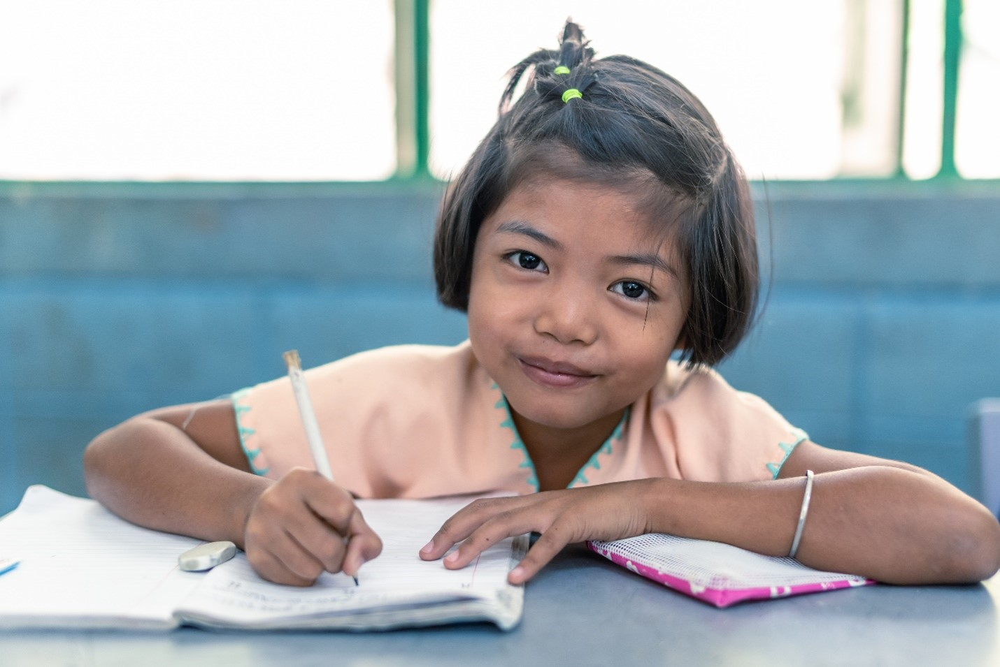
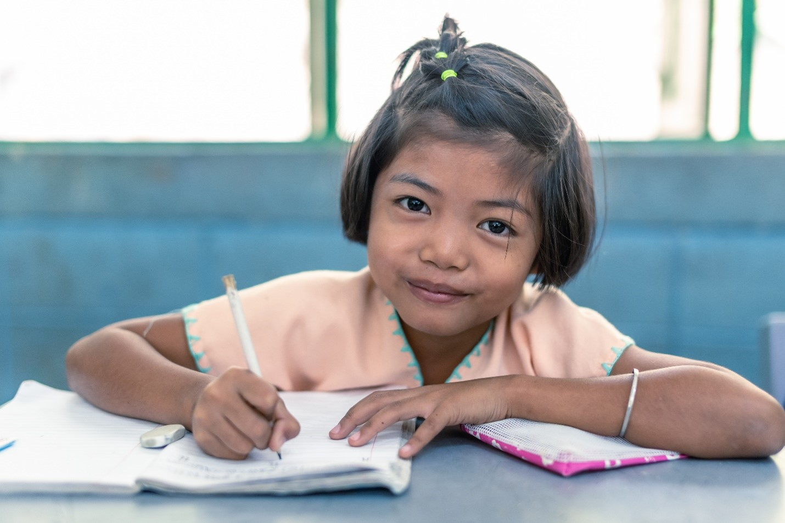

Caso Real: Brecha de Género en el Empleo en India
En India, la discriminación de género dentro del mercado laboral sigue siendo uno de los mayores obstáculos para el desarrollo social y económico. A pesar de los avances legislativos de las últimas décadas, millones de mujeres continúan enfrentando desigualdad salarial, falta de acceso a puestos de responsabilidad y una marcada presión social que limita su participación en sectores profesionales. Este caso refleja un patrón global, pero con especial intensidad en países donde las estructuras tradicionales aún condicionan las oportunidades disponibles para las mujeres.
Línea de Tiempo de la Evolución del Problema
Años 80
La participación femenina aumenta, pero la sociedad conserva roles rígidos que impiden el acceso equitativo al empleo.
1996
India impulsa leyes contra la discriminación y el acoso laboral, aunque la implementación sigue siendo insuficiente.
2013
El caso «Nirbhaya» provoca reformas y mayor conciencia pública sobre desigualdad y violencia contra las mujeres.
2020
La pandemia golpea con mayor fuerza a las mujeres, aumentando la brecha laboral y salarial.
Impactos
¿Cuál ha sido el impacto sobre las personas?
La discriminación de género afecta profundamente la vida de las mujeres, reduciendo su acceso a oportunidades laborales dignas, autonomía económica y empoderamiento social. Este fenómeno impacta su bienestar emocional, limita su capacidad de decisión y perpetúa ciclos de desigualdad que se transmiten entre generaciones.
¿Cuál ha sido el impacto sobre las empresas?
Las empresas pierden talento cualificado al excluir o limitar la participación de mujeres, lo que afecta la innovación, la productividad y la diversidad interna. La falta de mujeres en puestos de liderazgo disminuye la capacidad de las organizaciones para adaptarse a cambios sociales y competir globalmente.
¿Cuál ha sido el impacto sobre la actividad económica?
La discriminación de género reduce la fuerza laboral activa y limita el crecimiento del PIB. Estudios internacionales estiman que economías como la india podrían aumentar significativamente su riqueza si alcanzaran una participación laboral femenina similar a la masculina.
Medidas y Acciones
¿Qué medidas y/o acciones se han tomado para minimizar los impactos?
- Implementación de leyes contra el acoso y la discriminación en espacios laborales.
- Programas de capacitación profesional para mujeres jóvenes.
- Iniciativas gubernamentales para fomentar la igualdad salarial.
- Campañas educativas para reducir estereotipos de género.
¿Qué medidas deberían tomarse?
- Mayor fiscalización en empresas con historial de discriminación.
- Ampliación del acceso a servicios de guardería y apoyo familiar.
- Programas educativos que integren igualdad desde la infancia.
- Planes de igualdad obligatorios en empresas medianas y grandes.
 
